Nathaniel Inostroza Westphal - Artista

Sobre mim
Sou Nathaniel, faço arte desde os 10 anos e atualmente continuo desenvolvendo essas habilidades no papel, nas telas e até trabalho digital.
Também faço artesanato, crio acessórios (colares, brincos e pulseiras) e faço maquiagens artísticas.
Entre em contato:
+55 71 9 9188-0537
tweirdb no Instagram
nathanielinostrozawestphal@gmail.com.br
Objetivos
Desenvolver uma trajetória profissional como artista independente, utilizando pintura, desenho a lápis, caneta e outras
técnicas como formas de expressão, experimentação e criação de trabalhos autorais. Pretendo fazer minha arte alcançar cada vez mais pessoas.
Qualidades
Realizo pinturas em tela com tinta acrílica e de tecido; desenhos em papel a lápis e caneta; Desenhos feitos digitalmente;
Criatividade e autenticidade em cada obra.
Realizo retratos, desenhos arquitetônicos, natureza e criações autorais.
Crio acessórios completamente autorais.
Portfólio
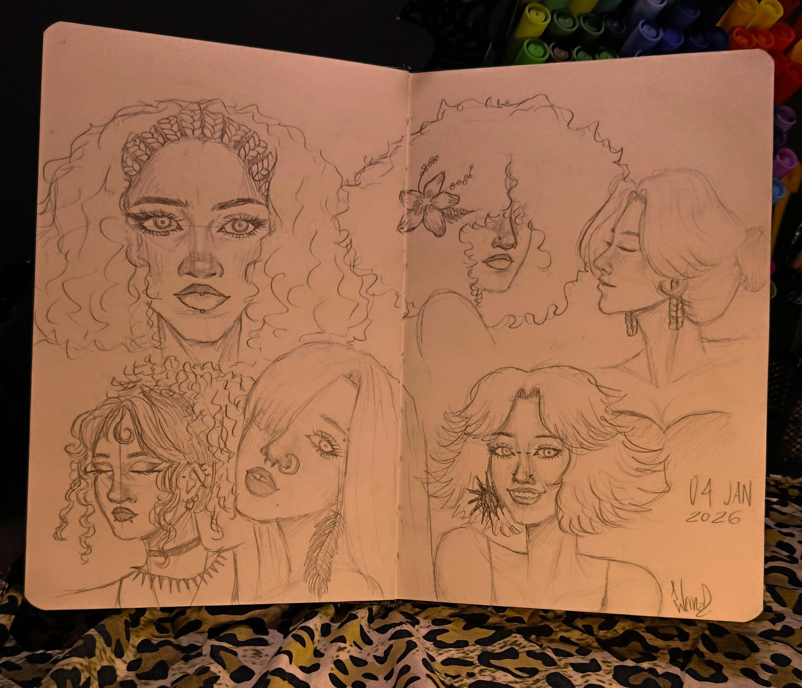
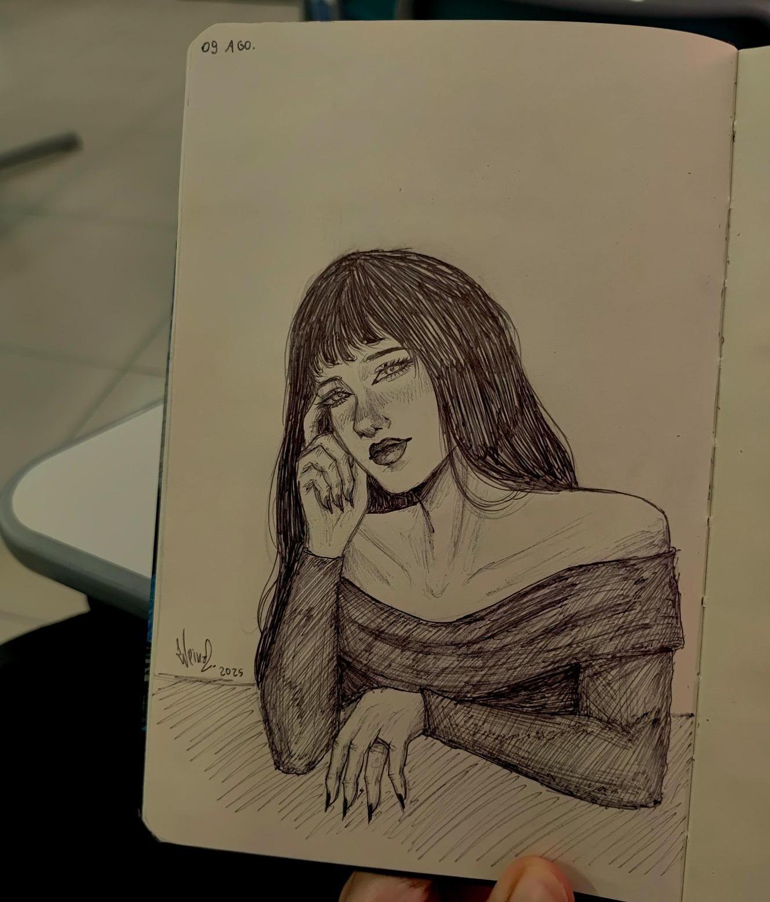
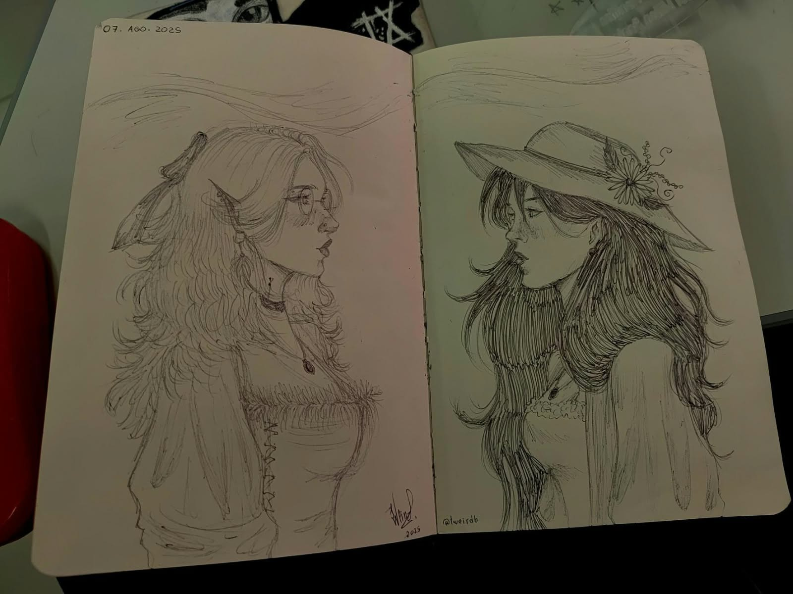
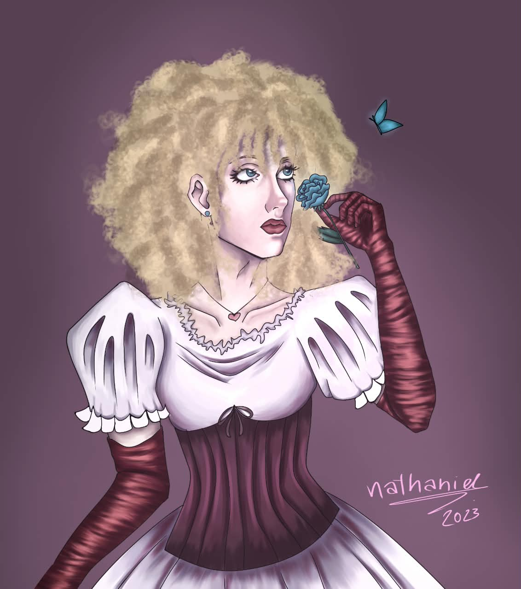
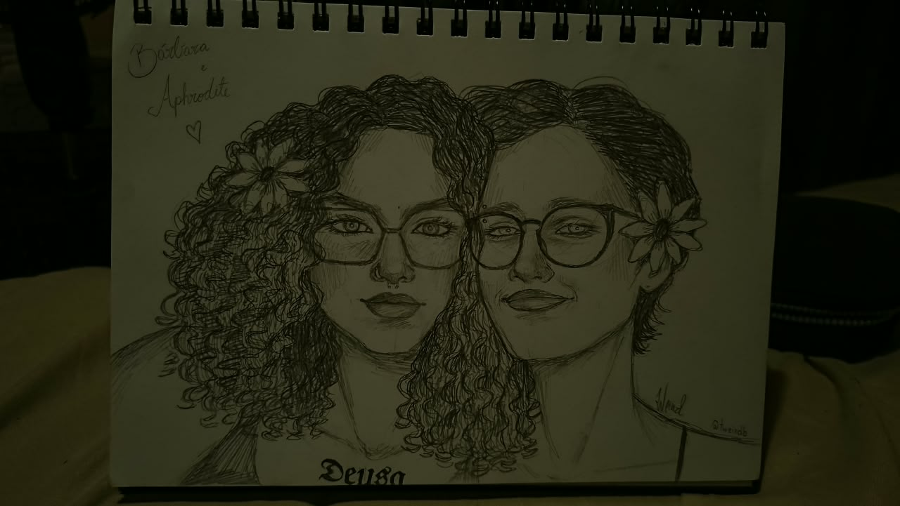
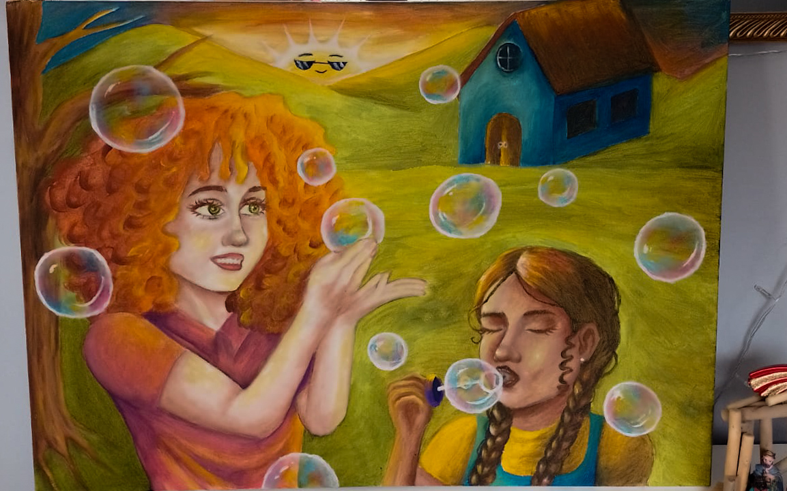
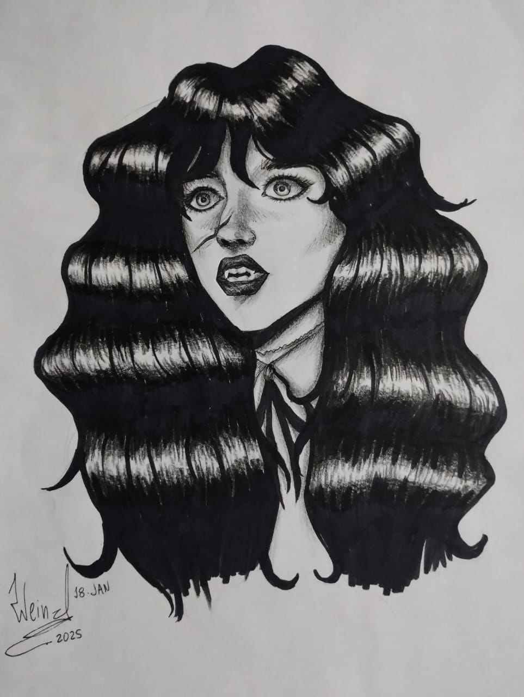
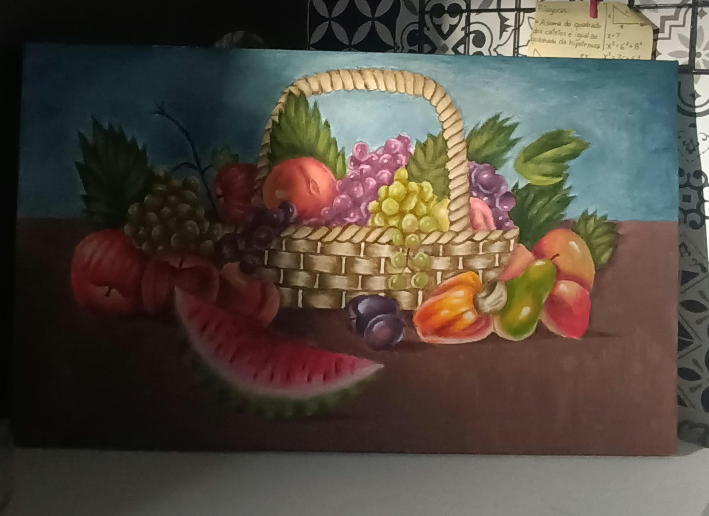
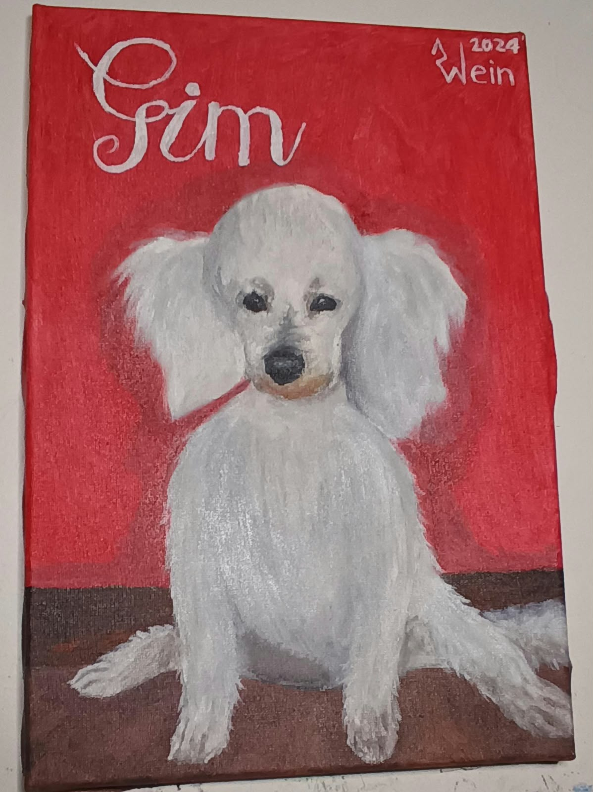
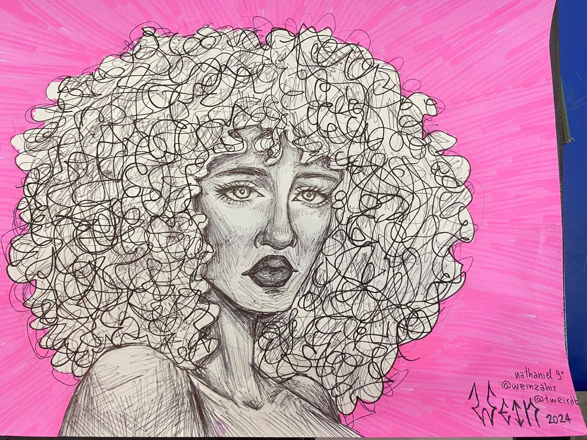
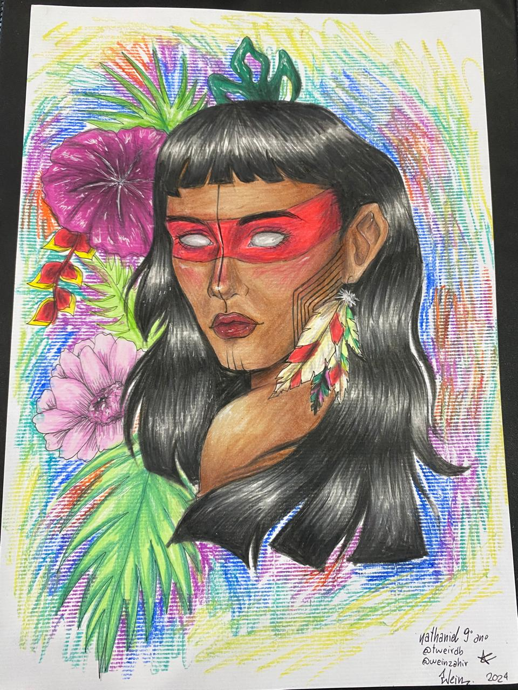
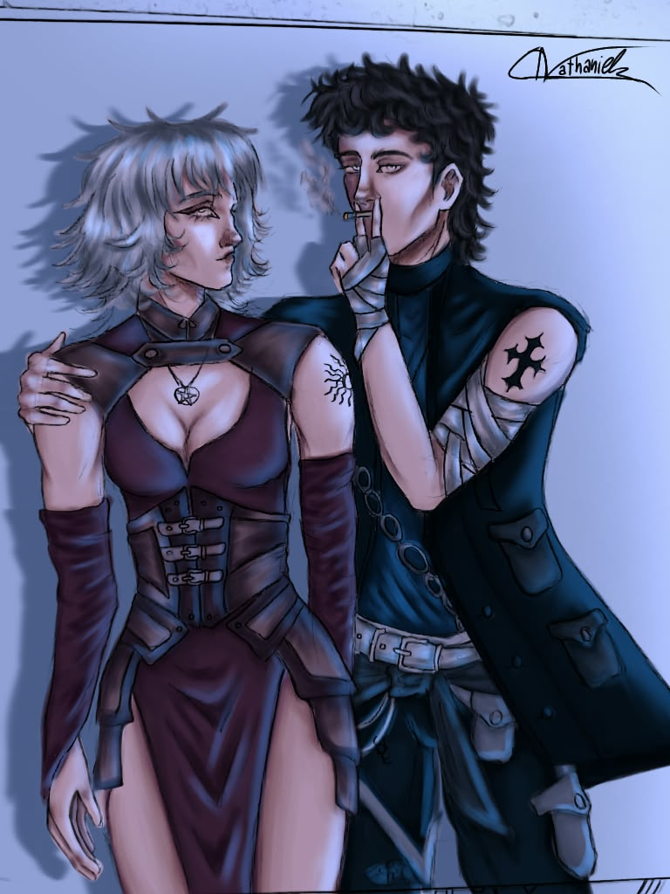
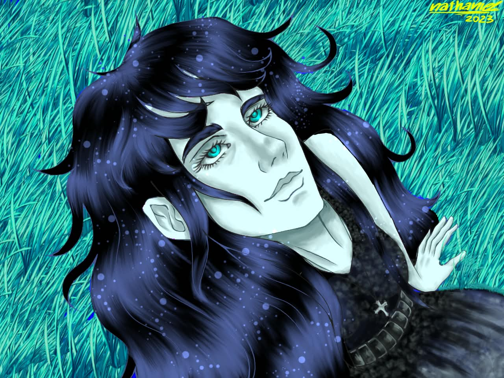